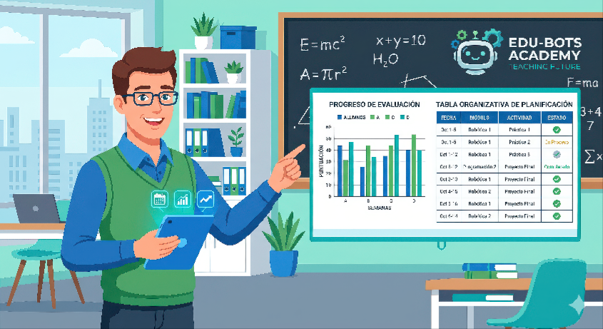

Texto
GUÍA DIDÁCTICA PARA EL PROFESORADO
Esta Situación de Aprendizaje está contextualizada para el alumnado de PTVAL con Necesidades Específicas de Apoyo Educativo, desarrollando la alfabetización digital y el pensamiento computacional.
Vinculación Curricular: Tareas y Criterios de Evaluación
| TAREA | CRITERIO DE EVALUACIÓN | AGRUPAMIENTO | HERRAMIENTA |
|---|---|---|---|
| Tarea 1: Simulación de Ruta Logística (Robótica) Organizar fichas físicas para trazar un recorrido de entrega en almacén. |
Resolución de problemas de la vida diaria y secuenciación de tareas en el entorno laboral de forma guiada y manipulativa. | Individual / Parejas. | MatataLab y Codey Rocky (bloques físicos y tapete de trabajo). |
| Tarea 2: Digitalización de la Secuencia Trasladar la ruta realizada a una ficha digital interactiva. |
Uso básico y seguro de la tecnología digital para comunicar y presentar información elemental del taller. | Individual con apoyo del monitor. | Google Docs (plantilla visual con imágenes) y guías visuales. |
| Tarea 3: Curación de Intereses (Web Personal) Navegar por el tablero cerrado para buscar imágenes y capacidades. |
Búsqueda y selección guiada de información relevante en entornos cerrados, seguros y accesibles. | Individual. | Symbaloo (Entorno cerrado de navegación visual). |
| Tarea 4: Mi Perfil Laboral Digital Rellenar su perfil personal en la web para mostrar capacidades. |
Creación de contenidos digitales elementales y gestión de la identidad digital respetando pautas de privacidad. | Individual. | Google Sites (Plantilla predeterminada de rellenar huecos) y guías ARASAAC. |
¿Cómo se resuelven las incidencias y problemas técnicos en el aula?
- Guías visuales y de anticipación: Apoyos fijos en las mesas con pictogramas (ARASAAC) para solucionar fallos frecuentes de forma autónoma (reiniciar robot, refrescar web).
- Plan analógico alternativo: Si la red o los componentes fallan, se trabaja sobre un tapete de suelo impreso o dibujado a mano, garantizando el mismo criterio de aprendizaje secuencial.
- Tutoría entre iguales: Alumnado con mayor competencia digital asiste a compañeros ante bloqueos menores de la interfaz.
- Apoyo directo del monitor de taller: Coordinación para solventar dificultades motoras o gestionar sobreestimulaciones sensoriales.

José Lopera Muñoz (vía IA Gemini). Un profesor con una tableta señala una pantalla digital que muestra gráficos y tablas de planificación. (CC BY-NC-SA)